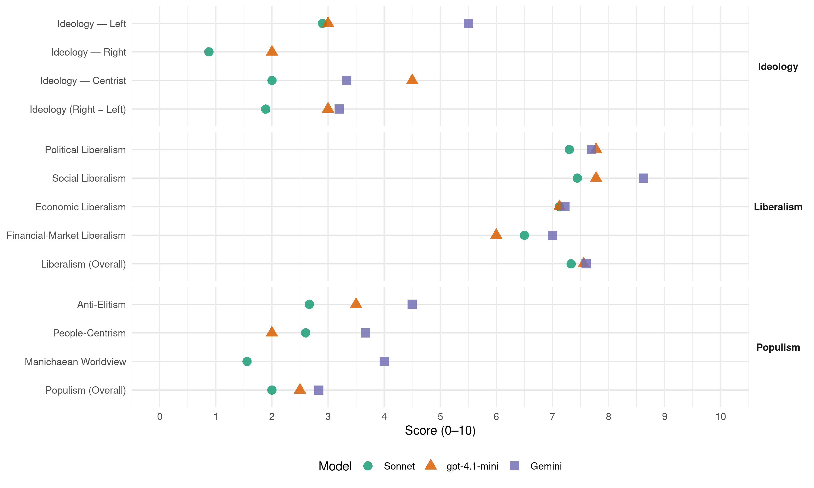

LDS (Slovenia, 2008)
manifesto_id 97421_200809
Get full text: This site shows derived annotations and short verbatim quotes only. The full manifesto text is © Manifesto Project / WZB — obtain it via manifesto-project.wzb.eu using the manifesto_id above.
Headline scores
| Dimension | Sonnet | gpt-4.1-mini | Gemini |
|---|---|---|---|
| Populism (Overall) | 2.0 | 2.5 | 2.8 |
| Anti-Elitism | 2.7 | 3.5 | 4.5 |
| People-Centrism | 2.6 | 2.0 | 3.7 |
| Manichaean Worldview | 1.6 | – | 4.0 |
| Ideology (Right − Left) | 1.9 | 3.0 | 3.2 |
| Liberalism (Overall) | 7.3 | 7.6 | 7.6 |
| Political Liberalism | 7.3 | 7.8 | 7.7 |
| Social Liberalism | 7.4 | 7.8 | 8.6 |
| Economic Liberalism | 7.1 | 7.1 | 7.2 |
| Financial-Market Liberalism | 6.5 | 6.0 | 7.0 |
Evidence per dimension
Economic Liberalism
Gemini · score 9.0 · verified · chunk 1
“pogoje odprtega trga in kakovost vodenja gospodarstva”
Slovenija ni izkoristila najboljšega začetnega položaja med srednje-in vzhodnoevropskimi državami, kar pogoje odprtega trga in kakovost vodenja gospodarstva zadeva, da bi se dobro pripravila na izboljšanje konkurenčnosti in prihodnjo gospodarsko rast.
Gemini · score 8.0 · verified · chunk 2
“temeljiti na podjetništvu, ki pa”
kot je Slovenija, bi morala temeljiti na podjetništvu, ki pa je sistemsko premalo spodbujano. Samo
Gemini · score 6.0 · mixed · chunk 3
“kmetijstvo večnamenska dejavnost, ki je v celoti ni mogoče prepustiti trgu”
Priznavamo, da je kmetijstvo večnamenska dejavnost, ki je v celoti ni mogoče prepustiti trgu, pač pa je njen razvoj v smeri trajnostnega
Gemini · score 7.0 · verified · chunk 4
“sovlaganja zasebnega kapitala”
javno zasebno partnerstvo, sovlaganja zasebnega kapitala v ustreznem
Gemini · score 7.0 · verified · chunk 5
“razvili taka javno-zasebna partnerstva”
upravljajo ekonomsko učinkoviteje. Zato bomo razvili taka javno-zasebna partnerstva, v katerih
Gemini · score 7.0 · verified · chunk 6
“vplivajo na delovanje prostega trga”
Dolgoročne posledice, ki utegnejo vplivati na delovanje prostega trga, lahko za seboj pustijo težkó popravljivo škodo.
Gemini · score 7.0 · verified · chunk 7
“preprečuje morebitne zlorabe liberalizirane dejavnosti”
uveljaviti je treba mehanizem nadzora, ki preprečuje morebitne zlorabe liberalizirane dejavnosti. Liberalizirati je mogoče tista
Gemini · score 7.0 · verified · chunk 8
“Javno-zasebno partnerstvo bo omogočilo hitrejši in učinkovitejši razvoj”
Javno-zasebno partnerstvo bo omogočilo hitrejši in učinkovitejši razvoj kulturne infrastrukture. Le z usklajenimi investicijami
Gemini · score 8.0 · verified · chunk 9
“spodbujati odprto in konkurenčno digitalno gospodarstvo”
Zato se še kako zavedamo, da bomo morali za uspešen razvoj informacijske družbe spodbujati odprto in konkurenčno digitalno gospodarstvo.
Gemini · score 5.0 · verified · chunk 10
“sofinanciranja za ženske podjetnice”
raziskovalne dejavnosti); podpora politiki in programom za povečanje zaposlenosti žensk, predvsem tudi težje zaposljivih (starejše ženske, samohranilke, pripadnice etičnih skupnosti …); usmerjene podpore v programe in možnosti sofinanciranja za ženske podjetnice; ustanavljanje podjetij, spodbujanje žensk
gpt-4.1-mini · score 8.0 · verified · chunk 1
“spodbujati rast konkurenčnih nacionalnih in regionalnih prvakov”
…Nova vlada mora najprej oceniti kritično količino in priložnosti za morebitne ključne industrijske in storitvene dejavnosti v Sloveniji, na podlagi tega pa določiti jasne gospodarske prednostne naloge in politiko ter nato spodbujati rast konkurenčnih nacionalnih in regionalnih prvakov…
gpt-4.1-mini · score 7.0 · verified · chunk 2
“Samo hitrejši in bolj preprost postopek registracije podjetja in S.P-ja”
Samo hitrejši in bolj preprost postopek registracije podjetja in S.P-ja, na čemer so temeljili sistemski ukrepi sedanje vlade, je premalo.
gpt-4.1-mini · score 7.0 · verified · chunk 4
“liberalizacije, deregulacije, avtonomije in konkurenčnosti se je dopuščalo in spodbujalo ustanavljanje zasebnih zavodov”
Pod krinko liberalizacije, deregulacije, avtonomije in konkurenčnosti se je dopuščalo in spodbujalo ustanavljanje zasebnih zavodov na račun že delujočih javnih, in to kljub neizpolnjevanju minimalnih pogojev ter standardov, kar je posledično načelo tudi kakovost šolskega sistema v celoti.
gpt-4.1-mini · score 7.0 · verified · chunk 5
“učinkovito razporejanje javnih sredstev”
S tem bomo dosegli učinkovito razporejanje javnih sredstev in povečali enako dostopnost do programov in zdravil.
gpt-4.1-mini · score 7.0 · verified · chunk 6
“spodbujali izmenjavo izkušenj, s sodelovanjem lokalnega prebivalstva pa krepili tak trajnostni razvoj”
…S temi finančnimi mehanizmi bomo krepili meddržavno sodelovanje v regiji, spodbujali izmenjavo izkušenj, s sodelovanjem lokalnega prebivalstva pa krepili tak trajnostni razvoj, ki temelji na ohranjeni naravi…
gpt-4.1-mini · score 7.0 · verified · chunk 7
“zagotoviti učinkovito in hkrati strokovno ter avtonomno javno upravo”
Varnost in upravna urejenost ter učinkovitost bodo tudi v prihodnje temeljna vodila LDS-a pri njegovem odnosu do javne uprave. Država je mehanizem, ki mora zagotavljati okolje in infrastrukturo za individualno reševanje težav posameznikov, biti mora v službi ljudi, ki od njene uprave pričakujejo profesionalnost in strokovno avtonomijo.
gpt-4.1-mini · score 7.0 · verified · chunk 9
“zagotoviti graditev znatno večjega števila stanovanj”
država mora preseči pasivno vlogo na področju reševanja stanovanjske problematike in zagotoviti graditev znatno večjega števila stanovanj, ki jih bodo vsi, ki želijo rešiti stanovanjski problem, lahko odkupili za neprofitno ceno oziroma najeli za neprofitno najemnino.
gpt-4.1-mini · score 7.0 · verified · chunk 10
“ustanovitelji novih podjetij 27 % žensk. Ženske so kot ustanoviteljice podjetja prevladovale”
leta 2002 je bilo med ustanovitelji novih podjetij 27 % žensk. Ženske so kot ustanoviteljice podjetja prevladovale le v gostinstvu; dopust za nego in varstvo otroka, ki si ga lahko starša razdelita, še vedno večinoma izkoristijo matere.
Sonnet · score 9.0 · verified · chunk 1
“spodbujanje ustanavljanja novih podjetij”
spodbujanje ustanavljanja novih podjetij in zagotavljanje olajšav za začetek njihovega dela
Sonnet · score 8.0 · verified · chunk 2
“uvajanje več konkurenčnosti predvsem v nemenjalni sektor”
zmanjšanje javne porabe predvsem na področju obrambe in gradnje cest… ter uvajanje več konkurenčnosti predvsem v nemenjalni sektor
Sonnet · score 5.0 · mixed · chunk 3
“nadaljnje postopne deregulacije uvozne zaščite”
Podpiramo spremembe SKP-ja v smeri nadaljnje postopne deregulacije uvozne zaščite, spremembe intervencijskih ukrepov v varnostno mrežo
Sonnet · score 6.0 · mixed · chunk 4
“deregulacijo in decentralizacijo šolskega sistema”
kar pomeni: deregulacijo in decentralizacijo šolskega sistema (pri imenovanju ravnateljev, zmanjšanje administrativnega vpliva ministrstva)
Sonnet · score 6.0 · verified · chunk 5
“spodbujati zasebnike k naložbam v šport”
Ustaviti je treba negativno privatizacijo in podržavljanje športnih institucij, vendar spodbujati zasebnike k naložbam v šport.
Sonnet · score 7.0 · verified · chunk 6
“spodbujanje zaposljivosti in razvijanje podjetniškega duha”
Evropski socialni sklad (ESS) - finančni instrument, namenjen vlaganju v ljudi. Njegovo poslanstvo je zmanjševanje brezposelnosti, spodbujanje zaposljivosti in razvijanje podjetniškega duha, vlaganje v znanje, skrb za enake možnosti
Sonnet · score 7.0 · verified · chunk 7
“deregulacijo zagotoviti višjo raven učinkovitosti”
z deregulacijo zagotoviti višjo raven učinkovitosti izvajanja javnih služb; uveljaviti mehanizme za krepitev javne etike pri delovanju izvoljenih političnih funkcionarjev
Sonnet · score 7.0 · verified · chunk 8
“razvoj konkurenčnosti”
Cilji reform javne uprave in lokalne samouprave so: zagotoviti večji prenos pristojnosti, omogočiti večjo prožnost upravnega sistema, kakovostnejše opravljanje nalog, razvoj konkurenčnosti.
Sonnet · score 7.0 · verified · chunk 9
“spodbujali odprto in konkurenčno digitalno gospodarstvo”
bomo morali za uspešen razvoj informacijske družbe spodbujati odprto in konkurenčno digitalno gospodarstvo. Zato bomo oblikovali pravno okolje
Sonnet · score 6.0 · verified · chunk 10
“spodbujanje žensk podjetnic; ustanavljanje podjetij”
usmerjene podpore v programe in možnosti sofinanciranja za ženske podjetnice; ustanavljanje podjetij, spodbujanje žensk
Financial-Market Liberalism
Gemini · score 8.0 · verified · chunk 1
“nadzor nad trgom vrednostih papirjev mora Agencija”
zaradi zagotavljanja učinkovitega nadzora nad trgom vrednostih papirjev mora Agencija za trg vrednostnih papirjev postati resnično neodvisen, strokoven organ, zato je treba zagotoviti spremembo načina imenovanja direktorja Agencije tako, da bo zagotavljal višjo stopnjo transparentnosti imenovanja in njegovo neodvisnost pri delu
Gemini · score 7.0 · verified · chunk 2
“likvidnosti domačega finančnega trga. Ker”
zato ne pripomorejo k izboljšanju likvidnosti domačega finančnega trga. Ker država na tem področju nima
Gemini · score 7.0 · verified · chunk 4
“spodbudne varčevalne sheme bank”
finančni mehanizmi (spodbudne varčevalne sheme bank in finančni vzvodi
Gemini · score 6.0 · verified · chunk 5
“zavarovalnice s svojim kapitalom sodelovale”
bodo na primer zavarovalnice s svojim kapitalom sodelovale pri financiranju nakupa
gpt-4.1-mini · score 7.0 · verified · chunk 1
“Agencija za trg vrednostnih papirjev postati resnično neodvisen, strokoven organ”
…zaradi zagotavljanja učinkovitega nadzora nad trgom vrednostnih papirjev mora Agencija za trg vrednostnih papirjev postati resnično neodvisen, strokoven organ, zato je treba zagotoviti spremembo načina imenovanja direktorja Agencije tako, da bo zagotavljal višjo stopnjo transparentnosti imenovanja in njegovo neodvisnost pri delu…
gpt-4.1-mini · score 5.0 · verified · chunk 2
“Tuje portfeljske ali finančne naložbe slabo razumemo, zato ne pripomorejo k izboljšanju likvidnosti domačega finančnega trga”
Tuje portfeljske ali finančne naložbe slabo razumemo, zato ne pripomorejo k izboljšanju likvidnosti domačega finančnega trga. Ker država na tem področju nima jasne strategije, bo slej ko prej domača borza prodana tuji,
Sonnet · score 9.0 · verified · chunk 1
“Agencija za trg vrednostnih papirjev postati resnično neodvisen”
mora Agencija za trg vrednostnih papirjev postati resnično neodvisen, strokoven organ
Sonnet · score 7.0 · verified · chunk 2
“Tuje portfeljske ali finančne naložbe slabo razumemo”
Tuje portfeljske ali finančne naložbe slabo razumemo, zato ne pripomorejo k izboljšanju likvidnosti domačega finančnega trga.
Sonnet · score 5.0 · verified · chunk 3
“bančništvo, zavarovalništvo itd.”
Neposredni in posredni učinki turizma so očitni tudi v drugih gospodarskih sektorjih (promet, trgovina, kmetijstvo, živilska industrija, obrtne storitve, bančništvo, zavarovalništvo itd.)
Sonnet · score 6.0 · verified · chunk 4
“rizični kapital za zagon novih inovativnih podjetij”
s sodelovanjem gospodarstva bomo zagotovili rizični kapital za zagon novih inovativnih podjetij in idej (»business angels«) v okviru univerzitetnih inkubatorjev
Sonnet · score 6.0 · verified · chunk 5
“vpeljati več konkurence”
bomo na trg zavarovalnih storitev vpeljali več konkurence, saj je na področju PZZ-ja položaj preveč monopolen
Sonnet · score 6.0 · verified · chunk 7
“najem bančnega kredita, sklenitev zavarovalne police”
je zanje dostop do storitev in blaga ter ugodnosti, povezanim s tem statusom, zaprt (npr. nakup ali najem stanovanja, najem bančnega kredita, sklenitev zavarovalne police, številni družinski popusti itd)
Sonnet · score 6.0 · verified · chunk 8
“najem bančnega kredita, sklenitev zavarovalne police”
Ker gejevski in lezbični pari v Sloveniji nimajo zakonsko priznanega statusa svojcev, je zanje dostop do storitev in blaga zaprt (npr. nakup ali najem stanovanja, najem bančnega kredita, sklenitev zavarovalne police).
Sonnet · score 7.0 · verified · chunk 9
“razvoj konkurenčnega trga elektronskih komunikacij”
Vzpostavili bomo ustrezno pravno okolje ter zagotovili kadrovsko, institucionalno in finančno neodvisnost regulatorjev. Zavzeli se bomo za učinkovito sankcioniranje vseh kršitev zakonodaje s področja varovanja konkurence. Okrepili bomo tudi sposobnost pravosodnega sistema za hitro in učinkovito reševanje sodnih sporov, kar je pomemben element razvoja konkurenčnega gospodarstva
Political Liberalism
Gemini · score 8.0 · verified · chunk 1
“Urad RS za varstvo konkurence postati resnično neodvisen”
Ukrepi za zagotavljanje konkurence so predvsem: zaradi zagotavljanja učinkovite konkurence in preprečevanja monopolov na trgu mora Urad RS za varstvo konkurence postati resnično neodvisen, strokoven organ. V ta namen je potrebno zagotoviti spremembo načina imenovanja direktorja urada tako, da bo zagotavljal višjo stopnjo transparentnosti pri delu
Gemini · score 7.0 · verified · chunk 2
“vladni ukrepi spodbujajo povpraševanje na”
stanovanj; v resnici pa vsi vladni ukrepi spodbujajo povpraševanje na stanovanjskem trgu, kar pa cene
Gemini · score 7.0 · verified · chunk 3
“nacionalni program sprejet v Državnem zboru”
razvoja podeželja (kot nacionalni program sprejet v Državnem zboru); sprememba Zakona o kmetijskih zemljiščih
Gemini · score 8.0 · verified · chunk 4
“demokratično manjšinsko šolstvo”
zagotavljati sodobno in demokratično manjšinsko šolstvo, učinkovito integracijo
Gemini · score 7.0 · verified · chunk 5
“v demokratičnem postopku, v katerem”
na njihove potrebe, ki jih bomo v demokratičnem postopku, v katerem je glas uporabnikov
Gemini · score 8.0 · verified · chunk 6
“krepitev ustavnega načela uravnotežene delitve oblasti”
pravosodne politike krepitev ustavnega načela uravnotežene delitve oblasti in nepopustljivost pravne države.
Gemini · score 9.0 · verified · chunk 7
“ustavnega načela uravnotežene delitve oblasti”
bosta temeljna cilja pravosodne politike krepitev ustavnega načela uravnotežene delitve oblasti in nepopustljivost pravne države.
Gemini · score 8.0 · verified · chunk 8
“vladavini prava mora temeljiti na opravljanju univerzalnih nalog”
varnostnega sistema, še posebej policije, v pravni državi ter vladavini prava mora temeljiti na opravljanju univerzalnih nalog, kot so
Gemini · score 8.0 · verified · chunk 9
“temeljnih vrednost svobode in demokracije”
Slovenija bo dosledna zagovornica temeljnih vrednost svobode in demokracije in odgovoren dejavnik v mednarodni skupnosti;
Gemini · score 7.0 · verified · chunk 10
“Zakon o volitvah v Državni zbor”
v občinskih svetih s proporcionalnim volilnim sistemom na volitvah leta 2006). Zakon o volitvah v Državni zbor iz leta 2006 je določil kvote
gpt-4.1-mini · score 8.0 · verified · chunk 1
“stabilna demokracija, dober napredek po številnih makroekonomskih kriterijih”
…Slovenija kot članica EU-ja in NATA relativno ugoden položaj, kar kažejo stabilna demokracija, dober napredek po številnih makroekonomskih kriterijih, največji BDP na prebivalca, najboljši življenjski standard med srednje-in vzhodnoevropskimi državami ter kar visoka raven izvoza…
gpt-4.1-mini · score 7.0 · verified · chunk 2
“V LDS-u bomo skrbno spremljali razpravo, ki se začenja v institucijah Evropske unije”
V LDS-u bomo skrbno spremljali razpravo, ki se začenja v institucijah Evropske unije o prihodnosti evropske kohezijske, strukturne in kmetijske politike po letu 2013.
gpt-4.1-mini · score 7.0 · verified · chunk 4
“demokratično manjšinsko šolstvo, učinkovito integracijo otrok priseljencev”
Človekove pravice: zagotavljati sodobno in demokratično manjšinsko šolstvo, učinkovito integracijo otrok priseljencev v slovensko šolo, zagotavljanje vseh pravic pri izobraževanju, pomoč pri vživljanju v slovensko družbo.
gpt-4.1-mini · score 7.0 · verified · chunk 5
“glas uporabnikov slišati”
Prihodnje zdravstveno varstvo se bo osredotočilo na uporabnike, na njihove potrebe, ki jih bomo v demokratičnem postopku, v katerem je glas uporabnikov slišati, opredelili in skladno s finančnimi možnostmi tudi zadovoljili.
gpt-4.1-mini · score 8.0 · verified · chunk 6
“zagotoviti brezplačen dostop do učinkovitega pravnega varstva”
…žrtvam kaznivih dejanj pa zagotoviti finančno podporo ne glede na njihovo premoženjsko stanje s pluralno politiko več možnosti državljanom, podjetjem in drugim strankam v sporu zagotavlja večjo svobodo izbire, hkrati pa krepi odgovornost strank v sporu za njihove težave in opušča pokroviteljski pristop države; bistveni predpogoj za uspešno pravosodno politiko je vzpostavljanje koalicij za spremembe… zagotoviti brezplačen dostop do učinkovitega pravnega varstva…
gpt-4.1-mini · score 9.0 · verified · chunk 7
“zagotoviti najvišjo stopnjo varovanja človekovih pravic in svoboščin”
Cilji modernizacije zagotoviti pogoje, v katerih bo država postala partnerica državljanov; zagotoviti najvišjo stopnjo varovanja človekovih pravic in svoboščin; z decentralizacijo države omogočiti večje sodelovanja prebivalcev pri odločanju o ključnih razvojnih vprašanjih;
gpt-4.1-mini · score 8.0 · verified · chunk 8
“zagotoviti enakost pred zakonom in učinkovit pregon storilcev kaznivih dejanj”
Zagotovili bomo enakost pred zakonom in učinkovit pregon storilcev kaznivih dejanj z upoštevanjem načel varovanja človekovih pravic ter človekovega dostojanstva v postopkih.
gpt-4.1-mini · score 8.0 · verified · chunk 9
“zagovornica oziroma zagovornika enakih možnosti žensk in moških”
Zakon o enakih možnostih žensk in moških uvaja institut zagovornica oziroma zagovornika enakih možnosti žensk in moških, institut, ki deluje pri Uradu za enake možnosti. Temeljna naloga zagovornice/zagovornika je obravnava primerov domnevne diskriminacije zaradi spola na vseh področjih družbenega življenja.
gpt-4.1-mini · score 8.0 · verified · chunk 10
“Zakon o enakih možnostih žensk in moških uvaja institut zagovornice”
Tudi EU je sprejel vrsto zavezujočih direktiv in manj obvezujočih dokumentov, ki zavezuje vse države članice k spoštovanju in zagotavljanju enakih pravic moških in žensk. Zakon o enakih možnostih žensk in moških uvaja institut zagovornice oziroma zagovornika enakih možnosti žensk in moških, institut, ki deluje pri Uradu za enake možnosti. Temeljna naloga zagovornice/zagovornika je obravnava primerov domnevne diskriminacije zaradi spola na vseh področjih družbenega življenja.
Sonnet · score 8.0 · verified · chunk 1
“stabilna demokracija, dober napredek”
kar kažejo stabilna demokracija, dober napredek po številnih makroekonomskih kriterijih
Sonnet · score 6.0 · verified · chunk 2
“fiskalna politika postala prožnejša in preglednejša”
bo omenjena politika postala prožnejša in preglednejša tudi z uvedbo tako imenovanega izdatkovnega pravila in z zmanjšanjem nekaterih fiksnih izdatkov proračuna
Sonnet · score 6.0 · verified · chunk 3
“sprejet v Državnem zboru”
strategija razvoja pridelave in predelave hrane ter razvoja podeželja (kot nacionalni program sprejet v Državnem zboru)
Sonnet · score 7.0 · verified · chunk 4
“soglasje politike (ministrov in funkcionarjev z ministrstev) za poslovanje”
soglasje politike (ministrov in funkcionarjev z ministrstev) za poslovanje in upravljanje v visokem šolstvu in znanosti ne bo potrebno, saj bodo zakonska določila temeljila na pravno in strokovno dogovorjenih pravicah
Sonnet · score 6.0 · verified · chunk 5
“v demokratičnem postopku, v katerem je glas”
potrebe, ki jih bomo v demokratičnem postopku, v katerem je glas uporabnikov slišati, opredelili in skladno s finančnimi možnostmi tudi zadovoljili
Sonnet · score 8.0 · verified · chunk 6
“krepitev ustavnega načela uravnotežene delitve oblasti”
bosta temeljna cilja pravosodne politike krepitev ustavnega načela uravnotežene delitve oblasti in nepopustljivost pravne države
Sonnet · score 8.0 · verified · chunk 7
“krepitev ustavnega načela uravnotežene delitve oblasti”
bosta temeljna cilja pravosodne politike krepitev ustavnega načela uravnotežene delitve oblasti in nepopustljivost pravne države.
Sonnet · score 8.0 · verified · chunk 8
“vladavino prava s spoštovanjem človekovih pravic”
V tem kontekstu bo treba zagotoviti vladavino prava s spoštovanjem klasičnih človekovih pravic in osebnih svoboščin tudi takrat, ko bo država vzpostavljala nadzorne varnostne ukrepe.
Sonnet · score 8.0 · verified · chunk 9
“zagovornica temeljnih vrednost svobode in demokracije”
Slovenija bo dosledna zagovornica temeljnih vrednost svobode in demokracije in odgovoren dejavnik v mednarodni skupnosti
Sonnet · score 8.0 · verified · chunk 10
“kvote za enakomerno zastopanost obeh spolov”
uveljavljanje kvot za enakomerno zastopanost obeh spolov; kvote so začasni pozitivni ukrepi za popravo nesorazmerne zastopanosti
Liberalism (Overall)
Gemini · score 8.0 · verified · chunk 1
“pogoje odprtega trga in kakovost vodenja gospodarstva”
Slovenija ni izkoristila najboljšega začetnega položaja med srednje-in vzhodnoevropskimi državami, kar pogoje odprtega trga in kakovost vodenja gospodarstva zadeva, da bi se dobro pripravila na izboljšanje konkurenčnosti in prihodnjo gospodarsko rast.
Gemini · score 7.0 · verified · chunk 2
“temeljiti na podjetništvu, ki pa”
kot je Slovenija, bi morala temeljiti na podjetništvu, ki pa je sistemsko premalo spodbujano. Samo
Gemini · score 7.0 · verified · chunk 3
“kmetijstvo večnamenska dejavnost, ki je v celoti ni mogoče prepustiti trgu”
Priznavamo, da je kmetijstvo večnamenska dejavnost, ki je v celoti ni mogoče prepustiti trgu, pač pa je njen razvoj v smeri trajnostnega
Gemini · score 8.0 · verified · chunk 4
“pravice italijanske in madžarske narodne”
Varovali bomo pravice italijanske in madžarske narodne skupnosti v
Gemini · score 7.0 · verified · chunk 5
“razvili taka javno-zasebna partnerstva”
upravljajo ekonomsko učinkoviteje. Zato bomo razvili taka javno-zasebna partnerstva, v katerih
Gemini · score 8.0 · verified · chunk 6
“krepitev ustavnega načela uravnotežene delitve oblasti”
pravosodne politike krepitev ustavnega načela uravnotežene delitve oblasti in nepopustljivost pravne države.
Gemini · score 8.0 · verified · chunk 7
“modernizacija pravosodja ena glavnih političnih prioritet”
da je modernizacija pravosodja ena glavnih političnih prioritet liberalnih demokratov.
Gemini · score 8.0 · verified · chunk 8
“vladavini prava mora temeljiti na opravljanju univerzalnih nalog”
varnostnega sistema, še posebej policije, v pravni državi ter vladavini prava mora temeljiti na opravljanju univerzalnih nalog, kot so
Gemini · score 8.0 · verified · chunk 9
“temeljnih vrednost svobode in demokracije”
Slovenija bo dosledna zagovornica temeljnih vrednost svobode in demokracije in odgovoren dejavnik v mednarodni skupnosti;
Gemini · score 7.0 · verified · chunk 10
“odpravi vseh oblik diskriminacije žensk”
nih dokumentih, med njimi tudi v Konvenciji o odpravi vseh oblik diskriminacije žensk. Tudi EU je sprejel vrsto zavezujočih
gpt-4.1-mini · score 8.0 · verified · chunk 1
“stabilna demokracija, dober napredek po številnih makroekonomskih kriterijih”
…Slovenija kot članica EU-ja in NATA relativno ugoden položaj, kar kažejo stabilna demokracija, dober napredek po številnih makroekonomskih kriterijih, največji BDP na prebivalca, najboljši življenjski standard med srednje-in vzhodnoevropskimi državami ter kar visoka raven izvoza…
gpt-4.1-mini · score 6.0 · verified · chunk 2
“Nadaljujemo davčno reformo v smeri dodatne racionalizacije, preglednosti, učinkovitosti in prijaznosti davčnega sistema”
Nadaljujemo davčno reformo v smeri dodatne racionalizacije, preglednosti, učinkovitosti in prijaznosti davčnega sistema: oodpravimo davek na izplačane plače; o omejimo zgornjo višino vseh prispevkov iz bruto plač; o uveljavimo rešitev, da slovenski prejemnik dividend iz dobička, dividend, na katere davek ni bil plačan, le-tega kot fizična oseba plača v obliki cedularnega davka, in sicer v višini splošne stopnje za davek od dobička pravnih oseb;
gpt-4.1-mini · score 7.0 · verified · chunk 4
“zagotavljati sodobno in demokratično manjšinsko šolstvo, učinkovito integracijo otrok priseljencev”
Človekove pravice: zagotavljati sodobno in demokratično manjšinsko šolstvo, učinkovito integracijo otrok priseljencev v slovensko šolo, zagotavljanje vseh pravic pri izobraževanju, pomoč pri vživljanju v slovensko družbo.
gpt-4.1-mini · score 7.0 · verified · chunk 5
“pravične in enake dostopnosti za vse”
To je zdravstveni sistem, ki temelji na bistvenih vrednotah solidarnosti, pravične in enake dostopnosti za vse, kakovosti in učinkovitosti.
gpt-4.1-mini · score 7.0 · verified · chunk 6
“zagotoviti brezplačen dostop do učinkovitega pravnega varstva”
…zagotoviti brezplačen dostop do učinkovitega pravnega varstva in socialno šibkim ponuditi možnost njegove izbire, žrtvam kaznivih dejanj pa zagotoviti finančno podporo ne glede na njihovo premoženjsko stanje s pluralno politiko več možnosti državljanom, podjetjem in drugim strankam v sporu zagotavlja večjo svobodo izbire…
gpt-4.1-mini · score 8.0 · verified · chunk 7
“zagotoviti najvišjo stopnjo varovanja človekovih pravic in svoboščin”
Cilji modernizacije zagotoviti pogoje, v katerih bo država postala partnerica državljanov; zagotoviti najvišjo stopnjo varovanja človekovih pravic in svoboščin; z decentralizacijo države omogočiti večje sodelovanja prebivalcev pri odločanju o ključnih razvojnih vprašanjih;
gpt-4.1-mini · score 9.0 · verified · chunk 8
“zagotoviti enakost pred zakonom in učinkovit pregon storilcev kaznivih dejanj”
Zagotovili bomo enakost pred zakonom in učinkovit pregon storilcev kaznivih dejanj z upoštevanjem načel varovanja človekovih pravic ter človekovega dostojanstva v postopkih.
gpt-4.1-mini · score 8.0 · verified · chunk 9
“zagovornica oziroma zagovornika enakih možnosti žensk in moških”
Zakon o enakih možnostih žensk in moških uvaja institut zagovornica oziroma zagovornika enakih možnosti žensk in moških, institut, ki deluje pri Uradu za enake možnosti. Temeljna naloga zagovornice/zagovornika je obravnava primerov domnevne diskriminacije zaradi spola na vseh področjih družbenega življenja.
gpt-4.1-mini · score 8.0 · verified · chunk 10
“Zakon o enakih možnostih žensk in moških uvaja institut zagovornice”
Tudi EU je sprejel vrsto zavezujočih direktiv in manj obvezujočih dokumentov, ki zavezuje vse države članice k spoštovanju in zagotavljanju enakih pravic moških in žensk. Zakon o enakih možnostih žensk in moških uvaja institut zagovornice oziroma zagovornika enakih možnosti žensk in moških, institut, ki deluje pri Uradu za enake možnosti.
Sonnet · score 8.0 · verified · chunk 1
“spodbujanje ustanavljanja novih podjetij”
spodbujanje ustanavljanja novih podjetij in zagotavljanje olajšav za začetek njihovega dela
Sonnet · score 7.0 · verified · chunk 2
“uvajanje več konkurenčnosti predvsem v nemenjalni sektor”
zmanjšanje javne porabe… ter uvajanje več konkurenčnosti predvsem v nemenjalni sektor
Sonnet · score 5.0 · mixed · chunk 3
“nadaljnje postopne deregulacije uvozne zaščite”
Podpiramo spremembe SKP-ja v smeri nadaljnje postopne deregulacije uvozne zaščite, spremembe intervencijskih ukrepov v varnostno mrežo
Sonnet · score 7.0 · verified · chunk 4
“Liberalna demokracija Slovenije je po vrednotah”
Liberalna demokracija Slovenije je po vrednotah in delovanju socialno-liberalna stranka. Brezosebni trg zagotovo ni naša edina vez z atomiziranimi posamezniki.
Sonnet · score 6.0 · verified · chunk 5
“učinkovito razmerje med javnim in zasebnim”
Glavni strateški cilji so: pravična in enakomerna dostopnost do zdravstvenih storitev, najboljša mogoča kakovost zdravljenja, učinkovito razmerje med javnim in zasebnim
Sonnet · score 7.0 · verified · chunk 6
“nepopustljivost pravne države”
bosta temeljna cilja pravosodne politike krepitev ustavnega načela uravnotežene delitve oblasti in nepopustljivost pravne države
Sonnet · score 8.0 · verified · chunk 7
“krepitev ustavnega načela uravnotežene delitve oblasti”
bosta temeljna cilja pravosodne politike krepitev ustavnega načela uravnotežene delitve oblasti in nepopustljivost pravne države.
Sonnet · score 7.0 · verified · chunk 8
“svoboda izražanja in ustvarjanja; kulturni pluralizem”
k temeljnim prvinam sodobne evropske kulturne politike, ki so svoboda izražanja in ustvarjanja; kulturni pluralizem; ovédenje pomena varovanja lastne identitete in kulturne dediščine.
Sonnet · score 8.0 · verified · chunk 9
“zagovornica temeljnih vrednost svobode in demokracije”
Slovenija bo dosledna zagovornica temeljnih vrednost svobode in demokracije in odgovoren dejavnik v mednarodni skupnosti
Sonnet · score 8.0 · verified · chunk 10
“enakih pravic moških in žensk”
EU je sprejel vrsto zavezujočih direktiv in manj obvezujočih dokumentov, ki zavezuje vse države članice k spoštovanju in zagotavljanju enakih pravic moških in žensk.
Anti-Elitism
Gemini · score 5.0 · verified · chunk 1
“Politične elite se na to odzovejo večinoma populistično”
vzdušje v družbi slabša, stopnja konfliktnosti v njej pa narašča. V Sloveniji se o tej temi razpravlja na precej polemičen način, v razpravah pa je zaznati spor med najmanj dvema ali celo več skupinami vodilnih ekonomistov in politikov, témo pa različno razume, si jo razlaga in jo dojema tudi širša javnost. Politične elite se na to odzovejo večinoma populistično in »gasilsko«, ker bodisi nimajo rešitve bodisi nimajo poguma
Gemini · score 4.0 · verified · chunk 2
“pristojnosti lokalnih političnih elit, ki”
gradnje je v pristojnosti lokalnih političnih elit, ki investitorjem omejujejo hiter in zanesljiv
Gemini · score 4.0 · verified · chunk 4
“vpliv politike na stroko”
se je povečeval vpliv politike na stroko. Kljub deklarativni
Gemini · score 6.0 · verified · chunk 5
“prilagojeni bolj interesnim skupinam”
financiranja prilagojeni bolj interesnim skupinam (lekarnarjem, zdravnikom, sindikatom
Gemini · score 4.0 · verified · chunk 8
“nenehna politizacija policije sta se v štirih letih pokazala”
Slábo kadrovanje na Ministrstvu za notranje zadeve in nenehna politizacija policije sta se v štirih letih pokazala predvsem v obliki slabih rezultatov
Gemini · score 4.0 · verified · chunk 9
“kadrovanje ne bo potekalo na podlagi političnih, sorodstvenih in prijateljskih kriterijev”
Zvezi s tem se še posebej zavedamo omejenih kadrovskih virov, zato bomo pazili na to, da bo pozornost usmerjena na sposobne in izobražene kadre in da kadrovanje ne bo potekalo na podlagi političnih, sorodstvenih in prijateljskih kriterijev oz. vezi.
gpt-4.1-mini · score 3.0 · verified · chunk 1
“Politične elite se na to odzovejo večinoma populistično in »gasilsko”“
…v razpravah pa je zaznati spor med najmanj dvema ali celo več skupinami vodilnih ekonomistov in politikov, tém… Politične elite se na to odzovejo večinoma populistično in »gasilsko”, ker bodisi nimajo rešitve bodisi nimajo poguma, da bi izpeljale korenite poteze, ki bi iz Slovenije naredile eno najbolj razvitih držav v EU-ja, jo uveljavile kot pomemben politični dejavnik na stari celini…
gpt-4.1-mini · score 4.0 · verified · chunk 2
“Odločanje o postopku gradnje je v pristojnosti lokalnih političnih elit”
Odločanje o postopku gradnje je v pristojnosti lokalnih političnih elit, ki investitorjem omejujejo hiter in zanesljiv dostop do zazidljivih stavbnih zemljišč.
Sonnet · score 3.0 · verified · chunk 1
“Politične elite se na to odzovejo večinoma populistično”
ker bodisi nimajo rešitve bodisi nimajo poguma, da bi izpeljale korenite poteze
Sonnet · score 3.0 · verified · chunk 2
“lokalnih političnih elit, ki investitorjem omejujejo”
Odločanje o postopku gradnje je v pristojnosti lokalnih političnih elit, ki investitorjem omejujejo hiter in zanesljiv dostop do zazidljivih stavbnih zemljišč.
Sonnet · score 2.0 · verified · chunk 3
“ne pa zgolj k interesom ozke skupine kmetov”
bolj usmerjen k interesom vse družbe, ne pas zgolj k interesom ozke skupine kmetov. Zagotavljati mora evropske javne dobrine
Sonnet · score 3.0 · verified · chunk 4
“argument moči, kar je poslabšalo medsebojne odnose”
namesto moči argumentov je prevladal argument moči, kar je poslabšalo medsebojne odnose in ustvarjalo zadržanost
Sonnet · score 4.0 · verified · chunk 5
“prilagojeni bolj interesnim skupinam”
regulatorni, zakonski okviri in organiziranost ter celoten sistem financiranja prilagojeni bolj interesnim skupinam (lekarnarjem, zdravnikom, sindikatom, farmacevtski industriji, veletrgovcem z zdravili) kot pa uporabniku zdravstvenih storitev
Sonnet · score 2.0 · mixed · chunk 6
“Janševa vlada povečala število zaposlenih sodnikov”
V obdobju od leta 2004 do 2008 je Janševa vlada povečala število zaposlenih sodnikov s 780 na 1.100. Slovenija je tako po podatkih Sveta Evrope (CEPEJ) postala absolutni evropski rekorder po številu sodnikov
Sonnet · score 2.0 · verified · chunk 7
“volitev ustavnih sodnikov v Državnem zboru nedopustno politizira”
postopek tudi ni jasen/razviden, volitev ustavnih sodnikov v Državnem zboru nedopustno politizira položaj ustavnega sodnika
Sonnet · score 3.0 · verified · chunk 8
“vladajoča koalicija je ves čas mandata delovala tako”
Ocena stanja na področju notranjih zadev: Vladajoča koalicija je ves čas mandata delovala tako, da je slabila učinkovito vlogo policije, področje varnosti države pa si je povsem podredila.
Sonnet · score 3.0 · verified · chunk 9
“pritiske strank v postopkih, ki so s pritiski”
izjave nekdanjega direktorja Urada za varstvo konkurence, ki je omenjal pritiske strank v postopkih, ki so s pritiski na zaposlene želele vplivati na odločitve varuha konkurence
Sonnet · score 1.0 · verified · chunk 10
“steklenega stropa” za napredovanje žensk”
razbijanje t. i. “steklenega stropa” za napredovanje žensk; skrb na področju izobraževanja
Ideology — Centrist
Gemini · score 4.0 · verified · chunk 1
“Politične elite se na to odzovejo večinoma populistično”
vzdušje v družbi slabša, stopnja konfliktnosti v njej pa narašča. V Sloveniji se o tej temi razpravlja na precej polemičen način, v razpravah pa je zaznati spor med najmanj dvema ali celo več skupinami vodilnih ekonomistov in politikov, témo pa različno razume, si jo razlaga in jo dojema tudi širša javnost. Politične elite se na to odzovejo večinoma populistično in »gasilsko«, ker bodisi nimajo rešitve bodisi nimajo poguma
Gemini · score 3.0 · verified · chunk 2
“pristojnosti lokalnih političnih elit, ki”
gradnje je v pristojnosti lokalnih političnih elit, ki investitorjem omejujejo hiter in zanesljiv
Gemini · score 3.0 · verified · chunk 8
“povečanje stopnje sodelovanja prebivalcev pri odločanju”
zagotoviti pogoje za uveljavljanje večje stopnje sodelovanja prebivalcev pri odločanju o javnih zadevah na lokalni ravni
gpt-4.1-mini · score 4.0 · verified · chunk 1
“Pričakovanja prebivalstva, kar visok življenjski in družbeni standard zadeva, so legitimna”
…stanje duha prebivalstva v zvezi z državo, ki je prvič v zgodovini res njegova, ostaja zgolj v območju visokih pričakovanj glede urejanja večine vprašanj. Pričakovanja prebivalstva, kar visok življenjski in družbeni standard zadeva, so legitimna in pomenijo voljo volivcev, zato je realno stremeti k ciljem, ki bodo pričakovanja prebivalcev uresničila v čim večji meri…
gpt-4.1-mini · score 5.0 · verified · chunk 2
“Država velikosti in zmogljivosti, kot je Slovenija, bi morala temeljiti na podjetništvu”
Država velikosti in zmogljivosti, kot je Slovenija, bi morala temeljiti na podjetništvu, ki pa je sistemsko premalo spodbujano.
Sonnet · score 2.0 · verified · chunk 1
“Pričakovanja prebivalstva, kar visok življenjski”
so legitimna in pomenijo voljo volivcev, zato je realno stremeti k ciljem
Sonnet · score 2.0 · verified · chunk 2
“Država velikosti in zmogljivosti, kot je Slovenija”
Država velikosti in zmogljivosti, kot je Slovenija, bi morala temeljiti na podjetništvu, ki pa je sistemsko premalo spodbujano.
Sonnet · score 2.0 · verified · chunk 3
“interesom vse družbe”
oblikovati ga je treba tako, da bo bolj usmerjen k interesom vse družbe, ne pas zgolj k interesom ozke skupine kmetov
Sonnet · score 2.0 · verified · chunk 4
“Brezosebni trg zagotovo ni naša edina vez”
Liberalna demokracija Slovenije je po vrednotah in delovanju socialno-liberalna stranka. Brezosebni trg zagotovo ni naša edina vez z atomiziranimi posamezniki.
Sonnet · score 3.0 · verified · chunk 5
“javni interes in javno zdravstvo”
strategije razvoja zdravstvenega sistema, ki bi v središče postavila uporabnika, javni interes in javno zdravstvo
Sonnet · score 2.0 · verified · chunk 7
“Žrtev takega stanja so državljani”
Žrtev takega stanja so državljani, še zlasti tisti, ki jim pravno varstvo zaradi njihovega šibkega premoženjskega stanja sploh ni dostopno.
Sonnet · score 2.0 · verified · chunk 8
“Demokracija niso le občasne volitve”
Zavzemamo se za nadaljnje utrjevanje lokalne demokracije. Demokracija niso le občasne volitve, zato bomo spodbujali nove oblike udeležbe prebivalcev v javnem življenju na lokalni ravni.
Sonnet · score 2.0 · verified · chunk 9
“svoboda predpogoj za varnost ljudi”
Svet naj bo tak, da bo svoboda predpogoj za varnost ljudi. V tem pogledu mora biti Slovenija dejavna in odgovorna članica OZN-a
Sonnet · score 1.0 · verified · chunk 10
“V LDS-u se zavzemamo za hitrejše udejanjanje”
V LDS-u se zavzemamo za hitrejše udejanjanje enakih možnosti predvsem na dveh področjih
Ideology — Left
Gemini · score 5.0 · verified · chunk 4
“izkoriščanje delavcev in njihovo zlorabo”
kapitalizma, ki pomenijo izkoriščanje delavcev in njihovo zlorabo za bogatenje
Gemini · score 6.0 · verified · chunk 5
“solidarnosti, ki je ena temeljnih usmeritev”
Cilji zdravstvenega programa temeljijo na solidarnosti, ki je ena temeljnih usmeritev LDS-a. To pomeni
gpt-4.1-mini · score 3.0 · verified · chunk 1
“Politične elite se na to odzovejo večinoma populistično in »gasilsko”“
…v razpravah pa je zaznati spor med najmanj dvema ali celo več skupinami vodilnih ekonomistov in politikov, tém… Politične elite se na to odzovejo večinoma populistično in »gasilsko”, ker bodisi nimajo rešitve bodisi nimajo poguma, da bi izpeljale korenite poteze, ki bi iz Slovenije naredile eno najbolj razvitih držav v EU-ja…
gpt-4.1-mini · score 3.0 · verified · chunk 2
“Dodatno obdavčimo razkošje, kot na primer avtomobile višjega cenovnega razreda”
Dodatno obdavčimo razkošje, kot na primer avtomobile višjega cenovnega razreda, nepremičnine, ki jih ljudje ne potrebujejo za vsakodnevno bivanje, in nadstandardne nepremičnine, zasebne jahte in letala ter ekološko sporne in za zdravje škodljive snovi.
Sonnet · score 2.0 · verified · chunk 1
“vsem upokojencem je treba zagotoviti dostojne pokojnine”
Posebno pozornost je treba nameniti večji varnosti prihodnjih generacij upokojencev
Sonnet · score 2.0 · verified · chunk 2
“manjši lastniki pogosto v podrejenem položaju”
upravljanje gospodarskih območij in poslovnih večetažnih nepremičnin je povsem prepuščeno zasebnemu pogodbenemu režimu, v katerem so manjši lastniki pogosto v podrejenem položaju.
Sonnet · score 3.0 · verified · chunk 3
“prerazporejevalec družbenega bogastva”
turizem je prerazporejevalec družbenega bogastva (iz gospodarsko razvitih v gospodarsko nerazvite regije)
Sonnet · score 3.0 · verified · chunk 4
“izkoriščanje delavcev in njihovo zlorabo za bogatenje lastnikov kapitala”
Preprečiti je treba oblike kapitalizma, ki pomenijo izkoriščanje delavcev in njihovo zlorabo za bogatenje lastnikov kapitala.
Sonnet · score 4.0 · verified · chunk 5
“solidarnosti, pravične in enake dostopnosti za vse”
zdravstveni sistem, ki temelji na bistvenih vrednotah solidarnosti, pravične in enake dostopnosti za vse, kakovosti in učinkovitosti
Sonnet · score 3.0 · verified · chunk 6
“Evropski socialni sklad - finančni instrument, namenjen vlaganju v ljudi”
Evropski socialni sklad (ESS) - finančni instrument, namenjen vlaganju v ljudi. Njegovo poslanstvo je zmanjševanje brezposelnosti, spodbujanje zaposljivosti in razvijanje podjetniškega duha
Sonnet · score 2.0 · verified · chunk 7
“geji in lezbijke so ranljiva družbena skupina”
Geji in lezbijke so – kot manjšinski del prebivalstva – ranljiva družbena skupina, podvržena večji stopnji tveganja za socialno izključenost in revščino.
Sonnet · score 3.0 · verified · chunk 8
“gejevski in lezbični pari v Sloveniji nimajo zakonsko priznanega statusa”
Ker gejevski in lezbični pari v Sloveniji nimajo zakonsko priznanega statusa svojcev oziroma družinskih članov, je zanje dostop do storitev in blaga ter ugodnosti zaprt.
Sonnet · score 3.0 · verified · chunk 9
“zmanjšanje socialnih razlik, izvirajočih iz neenakega dostopa”
zmanjšanje socialnih razlik, izvirajočih iz neenakega dostopa do stanovanj; večjo kakovost življenja v družbi
Sonnet · score 4.0 · verified · chunk 10
“enakega plačila za enako delovno mesto”
strogo nadzorovanje in kaznovanje na področju diskriminacije enakega plačila za enako delovno mesto; nadzor in kaznovalna politika
Ideology (Right − Left)
Gemini · score 3.0 · verified · chunk 1
“Politične elite se na to odzovejo večinoma populistično”
vzdušje v družbi slabša, stopnja konfliktnosti v njej pa narašča. V Sloveniji se o tej temi razpravlja na precej polemičen način, v razpravah pa je zaznati spor med najmanj dvema ali celo več skupinami vodilnih ekonomistov in politikov, témo pa različno razume, si jo razlaga in jo dojema tudi širša javnost. Politične elite se na to odzovejo večinoma populistično in »gasilsko«, ker bodisi nimajo rešitve bodisi nimajo poguma
Gemini · score 2.0 · verified · chunk 2
“pristojnosti lokalnih političnih elit, ki”
gradnje je v pristojnosti lokalnih političnih elit, ki investitorjem omejujejo hiter in zanesljiv
Gemini · score 4.0 · verified · chunk 4
“izkoriščanje delavcev in njihovo zlorabo”
kapitalizma, ki pomenijo izkoriščanje delavcev in njihovo zlorabo za bogatenje
Gemini · score 5.0 · verified · chunk 5
“solidarnosti, ki je ena temeljnih usmeritev”
Cilji zdravstvenega programa temeljijo na solidarnosti, ki je ena temeljnih usmeritev LDS-a. To pomeni
Gemini · score 2.0 · verified · chunk 8
“povečanje stopnje sodelovanja prebivalcev pri odločanju”
zagotoviti pogoje za uveljavljanje večje stopnje sodelovanja prebivalcev pri odločanju o javnih zadevah na lokalni ravni
gpt-4.1-mini · score 3.0 · verified · chunk 1
“Politične elite se na to odzovejo večinoma populistično in »gasilsko”“
…v razpravah pa je zaznati spor med najmanj dvema ali celo več skupinami vodilnih ekonomistov in politikov, tém… Politične elite se na to odzovejo večinoma populistično in »gasilsko”, ker bodisi nimajo rešitve bodisi nimajo poguma, da bi izpeljale korenite poteze, ki bi iz Slovenije naredile eno najbolj razvitih držav v EU-ja…
gpt-4.1-mini · score 3.0 · verified · chunk 2
“Država velikosti in zmogljivosti, kot je Slovenija, bi morala temeljiti na podjetništvu”
Država velikosti in zmogljivosti, kot je Slovenija, bi morala temeljiti na podjetništvu, ki pa je sistemsko premalo spodbujano.
Sonnet · score 2.0 · verified · chunk 1
“Politične elite se na to odzovejo večinoma populistično”
ker bodisi nimajo rešitve bodisi nimajo poguma, da bi izpeljale korenite poteze
Sonnet · score 1.0 · verified · chunk 2
“lokalnih političnih elit, ki investitorjem omejujejo”
Odločanje o postopku gradnje je v pristojnosti lokalnih političnih elit, ki investitorjem omejujejo hiter in zanesljiv dostop do zazidljivih stavbnih zemljišč.
Sonnet · score 2.0 · verified · chunk 3
“prerazporejevalec družbenega bogastva”
turizem je prerazporejevalec družbenega bogastva (iz gospodarsko razvitih v gospodarsko nerazvite regije)
Sonnet · score 2.0 · verified · chunk 4
“izkoriščanje delavcev in njihovo zlorabo za bogatenje lastnikov kapitala”
Preprečiti je treba oblike kapitalizma, ki pomenijo izkoriščanje delavcev in njihovo zlorabo za bogatenje lastnikov kapitala.
Sonnet · score 3.0 · verified · chunk 5
“solidarnosti, pravične in enake dostopnosti za vse”
zdravstveni sistem, ki temelji na bistvenih vrednotah solidarnosti, pravične in enake dostopnosti za vse, kakovosti in učinkovitosti
Sonnet · score 1.0 · verified · chunk 7
“Žrtev takega stanja so državljani”
Žrtev takega stanja so državljani, še zlasti tisti, ki jim pravno varstvo sploh ni dostopno.
Sonnet · score 2.0 · verified · chunk 8
“svoboda izražanja in ustvarjanja; kulturni pluralizem”
za nov zalet slovenske kulture stopiti korak nazaj, k temeljnim prvinam sodobne evropske kulturne politike, ki so svoboda izražanja in ustvarjanja; kulturni pluralizem; ovédenje pomena varovanja lastne identitete.
Sonnet · score 2.0 · verified · chunk 9
“pritiske strank v postopkih”
izjave nekdanjega direktorja Urada za varstvo konkurence, ki je omenjal pritiske strank v postopkih, ki so s pritiski na zaposlene želele vplivati na odločitve varuha konkurence
Sonnet · score 2.0 · verified · chunk 10
“enakih možnosti žensk in moških”
Zakon o enakih možnostih žensk in moških uvaja institut zagovornice oziroma zagovornika enakih možnosti žensk in moških
Ideology — Right
gpt-4.1-mini · score 2.0 · verified · chunk 1
“Spodbujati je treba sodelovanje s slovensko manjšino v Italiji in Avstriji”
…Od drugih ukrepov so še posebej pomembni tile: manj učinkovito državno lastnino bo treba ustrezno privatizirati… Spodbujati je treba sodelovanje s slovensko manjšino v Italiji in Avstriji, in sicer v okviru obmejnih strategij gospodarskega razvoja na lokalni in nacionalni ravni…
Sonnet · score 1.0 · verified · chunk 1
“priseljevanje znanja naslednji veliki cilj”
mora postati priseljevanje znanja naslednji veliki cilj slovenske politike
Sonnet · score 1.0 · verified · chunk 2
“Odnos do tujih novih neposrednih”
Odnos do tujih novih neposrednih (»greenfield«) naložb je nejasen in prej moteč kot spodbuden za tujca.
Sonnet · score 1.0 · verified · chunk 3
“upoštevati načelo previdnosti”
je treba pri gojenju gensko spremenjenih rastlin … upoštevati predvsem načelo previdnosti, strogo nadzorovati zagotavljanje
Sonnet · score 1.0 · verified · chunk 4
“spodbujali učenje sosedskih jezikov”
Prizadevali si bomo za enake možnosti izobraževanja Romov in spodbujali učenje sosedskih jezikov.
Sonnet · score 1.0 · verified · chunk 7
“varovali bomo pravice italijanske in madžarske narodne skupnosti”
Varovali bomo pravice italijanske in madžarske narodne skupnosti pri vzgoji in izobraževanju ter razvijali modele manjšinskega šolstva
Sonnet · score 1.0 · verified · chunk 8
“nezakonitih migracij, ki so za varnost državljanov posebnega pomena”
povečeval operativno sposobnost in učinkovitost institucij Unije na področju ukrepov za zajezitev mednarodnega terorizma, čezmejnega organiziranega kriminala ter nezakonitih migracij, ki so za varnost državljanov posebnega pomena.
Sonnet · score 1.0 · verified · chunk 9
“Narodnostno in jezikovno mejo je treba ohranjati”
Narodnostno in jezikovno mejo je treba ohranjati, meja pa naj bo tam, kjer Slovenci živijo.
Sonnet · score 0.0 · verified · chunk 10
“spodbujanje žensk, da se odločijo za to obliko zaposlitve”
ustanavljanje podjetij, spodbujanje žensk, da se odločijo za to obliko zaposlitve; zagotavljanje enakih možnosti
Manichaean Worldview
Gemini · score 4.0 · verified · chunk 5
“Škodljivo delovanje sedanje vlade”
Šport S ŠPORTNIM DUHOM DO VRHUNSKIH USPEHOV I. Stanje Škodljivo delovanje sedanje vlade Sedanja vlada na področju
Sonnet · score 2.0 · verified · chunk 1
“Dejavno je treba ustaviti vse lobije”
katerih interes je preprečiti tako demonopolizacijo in deregulacijo
Sonnet · score 1.0 · verified · chunk 2
“parcialnih ciljev, ki pa niso nujno v interesu”
sektor to definicijo pogosto izrablja kot krinko za doseganje parcialnih ciljev, ki pa niso nujno v interesu Slovenije in njenih državljanov.
Sonnet · score 1.0 · verified · chunk 3
“nasprotje interesov med zasebnim sektorjem”
Protislovje povratne zveze med turizmom … je rezultat nasprotja interesov med zasebnim sektorjem (dobiček na kratki rok) in javnim sektorjem
Sonnet · score 2.0 · verified · chunk 4
“namesto moči argumentov je prevladal argument moči”
V razpravah je bil zavrnjen praktično vsak dialog s partnerji… namesto moči argumentov je prevladal argument moči
Sonnet · score 2.0 · verified · chunk 5
“Sedanja vlada na področju športa deluje izrazito slabo”
Škodljivo delovanje sedanje vlade. Sedanja vlada na področju športa deluje izrazito slabo in škodljivo, država pa se do športa vede dobesedno mačehovsko.
Sonnet · score 1.0 · verified · chunk 7
“država in njene institucije niso bile sposobne zagotoviti”
V omenjenih primerih se je izkazalo, da prav država in njene institucije niso bile sposobne zagotoviti zavarovanja pravic prizadetih.
Sonnet · score 2.0 · verified · chunk 8
“boj proti korupciji, klientelizmu, kriminalu”
LDS se še naprej zavzema za izboljšanje delovanja pravne države. Stalnica delovanja je boj proti korupciji, klientelizmu, kriminalu vseh vrst ter zlorabam.
Sonnet · score 2.0 · verified · chunk 9
“monopolna kultura ogroža vrednost državnega premoženja”
Monopolna kultura ogroža vrednost državnega premoženja. Proti vodilnemu operaterju v državni lasti so ta hip vložene tožbe
Sonnet · score 1.0 · verified · chunk 10
“nasilje nad ženskami izgubil status tabuteme”
Pri nas je zadnja leta, predvsem zaradi dejavnosti ženskih skupin, pojem nasilja nad ženskami izgubil status tabuteme.
People-Centrism
Gemini · score 3.0 · verified · chunk 4
“glas uporabnikov slišati”
postopku, v katerem je glas uporabnikov slišati, opredelili in
Gemini · score 5.0 · verified · chunk 5
“v središče postavila uporabnika”
razvoja zdravstvenega sistema, ki bi v središče postavila uporabnika, javni interes in
Gemini · score 3.0 · verified · chunk 8
“večjega sodelovanja prebivalcev pri odločanju o javnih zadevah”
Decentralizacija države je pomemben vzvod zagotavljanja večjega sodelovanja prebivalcev pri odločanju o javnih zadevah. Moderna država temelji
gpt-4.1-mini · score 2.0 · verified · chunk 1
“Pričakovanja prebivalstva, kar visok življenjski in družbeni standard zadeva, so legitimna”
…stanje duha prebivalstva v zvezi z državo, ki je prvič v zgodovini res njegova, ostaja zgolj v območju visokih pričakovanj glede urejanja večine vprašanj. Pričakovanja prebivalstva, kar visok življenjski in družbeni standard zadeva, so legitimna in pomenijo voljo volivcev, zato je realno stremeti k ciljem, ki bodo pričakovanja prebivalcev uresničila v čim večji meri…
Sonnet · score 3.0 · verified · chunk 1
“ljudje izboljšanja ne občutijo”
Kljub temu, da se je Slovenija osamosvojila, korenito spremenila politični in družbenoekonomski sistem
Sonnet · score 2.0 · verified · chunk 2
“vsi državljani in podjetja dostop do energije”
zagotovila, da bodo imeli vsi državljani in podjetja dostop do energije.
Sonnet · score 2.0 · verified · chunk 3
“interesom vse družbe”
SKP-ja, ne pa za njegovo ukinitev, a oblikovati ga je treba tako, da bo bolj usmerjen k interesom vse družbe, ne pas zgolj k interesom ozke skupine kmetov
Sonnet · score 3.0 · verified · chunk 4
“vsem in spodbujali vseživljenjsko učenje”
Znanje bomo približali vsem in spodbujali vseživljenjsko učenje. To ni pomembno le zaradi zagotavljanja načela enakih možnosti
Sonnet · score 4.0 · verified · chunk 5
“v središče postavila uporabnika, javni interes”
Vlada pa nima ne vizije ne strategije razvoja zdravstvenega sistema, ki bi v središče postavila uporabnika, javni interes in javno zdravstvo.
Sonnet · score 2.0 · verified · chunk 6
“svobodo izbire, hkrati pa krepi odgovornost strank”
s pluralno politiko več možnosti državljanom, podjetjem in drugim strankam v sporu zagotavlja večjo svobodo izbire, hkrati pa krepi odgovornost strank v sporu za njihove težave
Sonnet · score 3.0 · verified · chunk 7
“Žrtev takega stanja so državljani”
Namesto investiranja v tehnološko posodobitev je pretežni del investicij v slovenskem pravosodju usmerjen v zidove. Žrtev takega stanja so državljani, še zlasti tisti, ki jim pravno varstvo zaradi njihovega šibkega premoženjskega stanja sploh ni dostopno.
Sonnet · score 2.0 · verified · chunk 8
“zagotavljanje varnega življenja ljudi”
Poslanstvo: zagotavljanje varnega življenja ljudi. Notranjo varnost v prvi vrsti zagotavlja država prek svojih subjektov varnostnega sistema.
Sonnet · score 3.0 · verified · chunk 9
“koristi IKT-ja uživali vsi državljani”
zagotoviti, da bodo koristi IKT-ja uživali vsi državljani, in da bo IKT prispeval tudi k dvigu kakovosti življenja vseh državljanov
Sonnet · score 2.0 · verified · chunk 10
“ženske pomenijo več kot polovico prebivalstva”
Nekaj konkretnih podatkov o položaju žensk pri nas: pomenijo več kot polovico prebivalstva; pričakovana življenjska doba
Populism (Overall)
Gemini · score 3.0 · verified · chunk 1
“Politične elite se na to odzovejo večinoma populistično”
vzdušje v družbi slabša, stopnja konfliktnosti v njej pa narašča. V Sloveniji se o tej temi razpravlja na precej polemičen način, v razpravah pa je zaznati spor med najmanj dvema ali celo več skupinami vodilnih ekonomistov in politikov, témo pa različno razume, si jo razlaga in jo dojema tudi širša javnost. Politične elite se na to odzovejo večinoma populistično in »gasilsko«, ker bodisi nimajo rešitve bodisi nimajo poguma
Gemini · score 2.0 · verified · chunk 2
“pristojnosti lokalnih političnih elit, ki”
gradnje je v pristojnosti lokalnih političnih elit, ki investitorjem omejujejo hiter in zanesljiv
Gemini · score 3.0 · verified · chunk 4
“vpliv politike na stroko”
se je povečeval vpliv politike na stroko. Kljub deklarativni
Gemini · score 5.0 · verified · chunk 5
“prilagojeni bolj interesnim skupinam”
financiranja prilagojeni bolj interesnim skupinam (lekarnarjem, zdravnikom, sindikatom
Gemini · score 2.0 · verified · chunk 8
“nenehna politizacija policije sta se v štirih letih pokazala”
Slábo kadrovanje na Ministrstvu za notranje zadeve in nenehna politizacija policije sta se v štirih letih pokazala predvsem v obliki slabih rezultatov
Gemini · score 2.0 · verified · chunk 9
“kadrovanje ne bo potekalo na podlagi političnih, sorodstvenih in prijateljskih kriterijev”
Zvezi s tem se še posebej zavedamo omejenih kadrovskih virov, zato bomo pazili na to, da bo pozornost usmerjena na sposobne in izobražene kadre in da kadrovanje ne bo potekalo na podlagi političnih, sorodstvenih in prijateljskih kriterijev oz. vezi.
gpt-4.1-mini · score 2.0 · verified · chunk 1
“Politične elite se na to odzovejo večinoma populistično in »gasilsko”“
…v razpravah pa je zaznati spor med najmanj dvema ali celo več skupinami vodilnih ekonomistov in politikov, tém… Politične elite se na to odzovejo večinoma populistično in »gasilsko”, ker bodisi nimajo rešitve bodisi nimajo poguma, da bi izpeljale korenite poteze, ki bi iz Slovenije naredile eno najbolj razvitih držav v EU-ja, jo uveljavile kot pomemben politični dejavnik na stari celini…
gpt-4.1-mini · score 3.0 · verified · chunk 2
“Odločanje o postopku gradnje je v pristojnosti lokalnih političnih elit”
Odločanje o postopku gradnje je v pristojnosti lokalnih političnih elit, ki investitorjem omejujejo hiter in zanesljiv dostop do zazidljivih stavbnih zemljišč.
Sonnet · score 2.0 · verified · chunk 1
“Politične elite se na to odzovejo večinoma populistično”
ker bodisi nimajo rešitve bodisi nimajo poguma, da bi izpeljale korenite poteze
Sonnet · score 2.0 · verified · chunk 2
“lokalnih političnih elit, ki investitorjem omejujejo”
Odločanje o postopku gradnje je v pristojnosti lokalnih političnih elit, ki investitorjem omejujejo hiter in zanesljiv dostop do zazidljivih stavbnih zemljišč.
Sonnet · score 2.0 · verified · chunk 3
“ne pas zgolj k interesom ozke skupine kmetov”
bolj usmerjen k interesom vse družbe, ne pas zgolj k interesom ozke skupine kmetov. Zagotavljati mora evropske javne dobrine
Sonnet · score 2.0 · verified · chunk 4
“argument moči, kar je poslabšalo medsebojne odnose”
namesto moči argumentov je prevladal argument moči, kar je poslabšalo medsebojne odnose in ustvarjalo zadržanost
Sonnet · score 3.0 · verified · chunk 5
“prilagojeni bolj interesnim skupinam”
celoten sistem financiranja prilagojeni bolj interesnim skupinam (lekarnarjem, zdravnikom, sindikatom, farmacevtski industriji) kot pa uporabniku zdravstvenih storitev
Sonnet · score 2.0 · verified · chunk 7
“Žrtev takega stanja so državljani”
Žrtev takega stanja so državljani, še zlasti tisti, ki jim pravno varstvo zaradi njihovega šibkega premoženjskega stanja sploh ni dostopno.
Sonnet · score 2.0 · verified · chunk 8
“slabila učinkovito vlogo policije”
Vladajoča koalicija je ves čas mandata delovala tako, da je slabila učinkovito vlogo policije, področje varnosti države pa si je povsem podredila.
Sonnet · score 2.0 · verified · chunk 9
“pritiske strank v postopkih”
izjave nekdanjega direktorja Urada za varstvo konkurence, ki je omenjal pritiske strank v postopkih, ki so s pritiski na zaposlene želele vplivati na odločitve varuha konkurence
Sonnet · score 1.0 · verified · chunk 10
“steklenega stropa” za napredovanje žensk”
razbijanje t. i. “steklenega stropa” za napredovanje žensk; skrb na področju izobraževanja
Social Liberalism